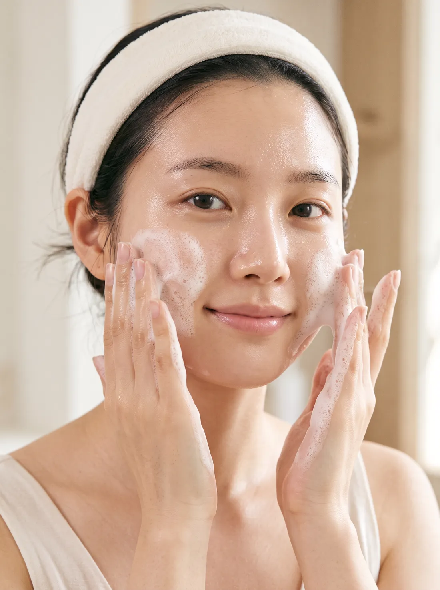
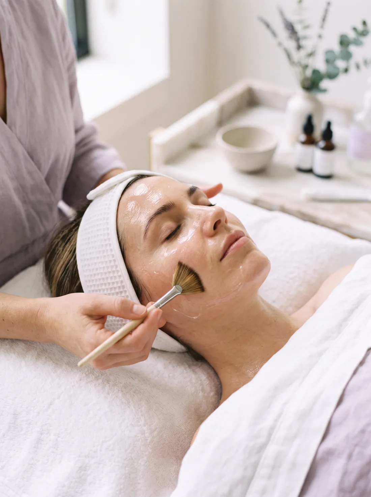
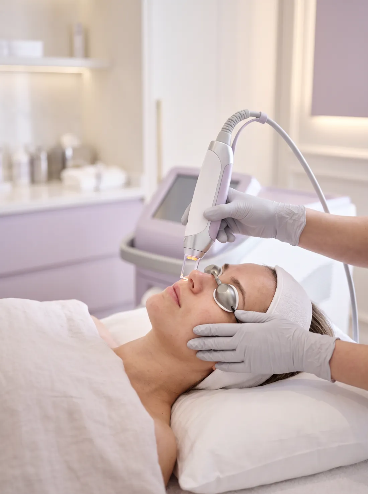
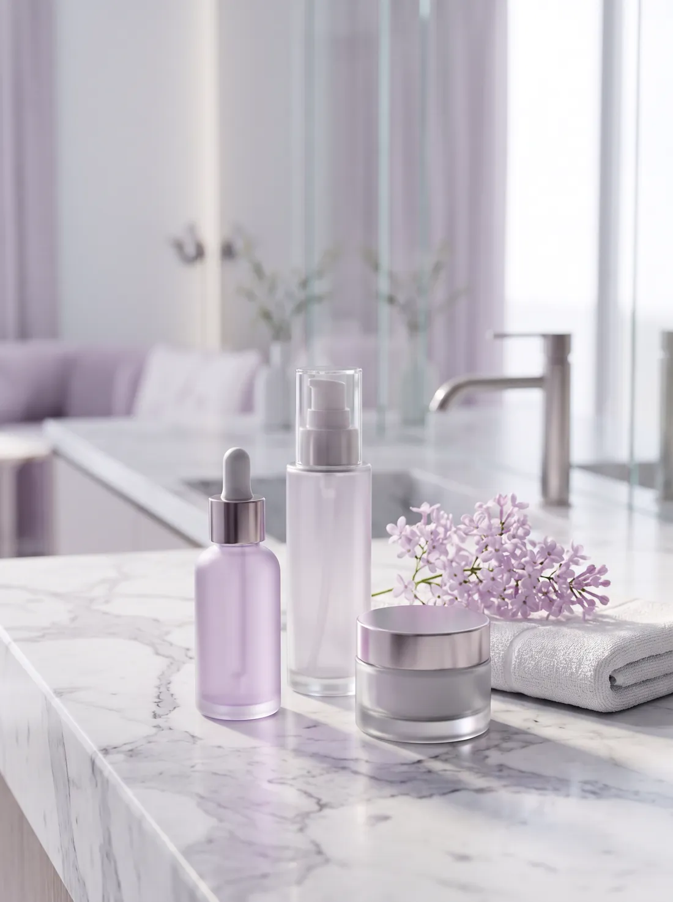
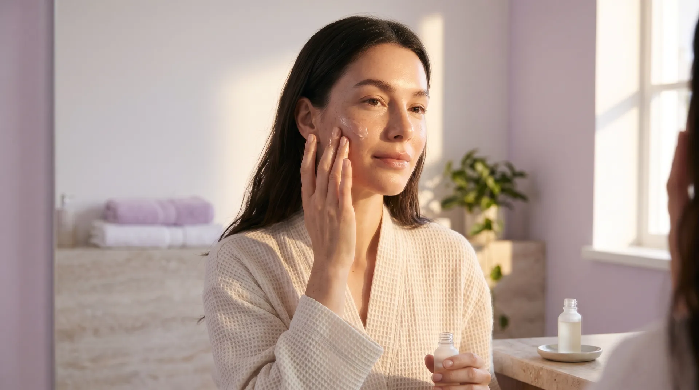
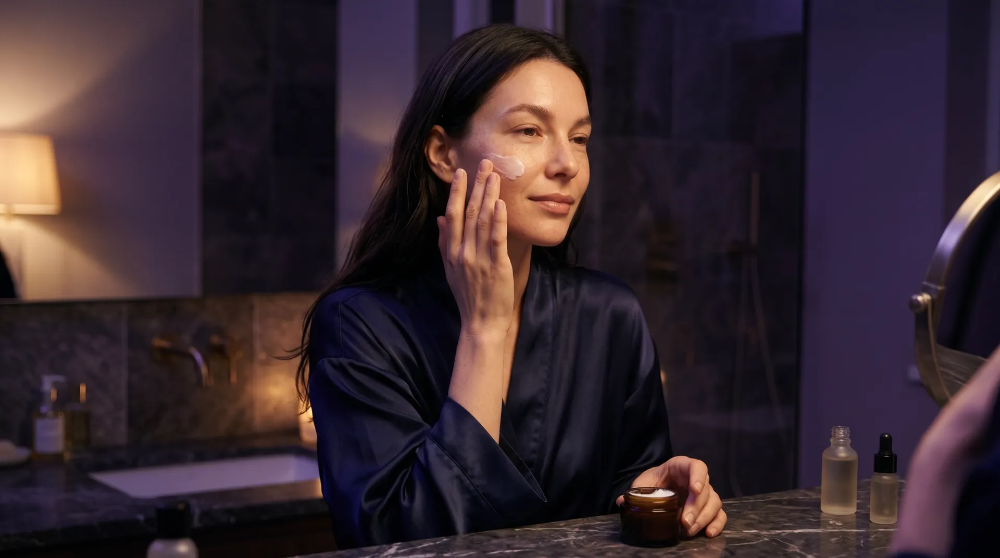
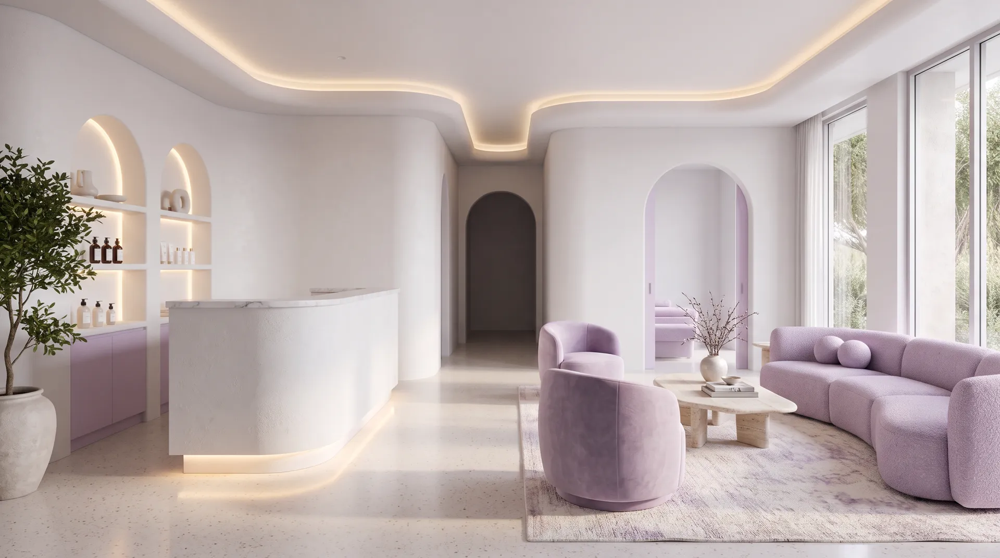
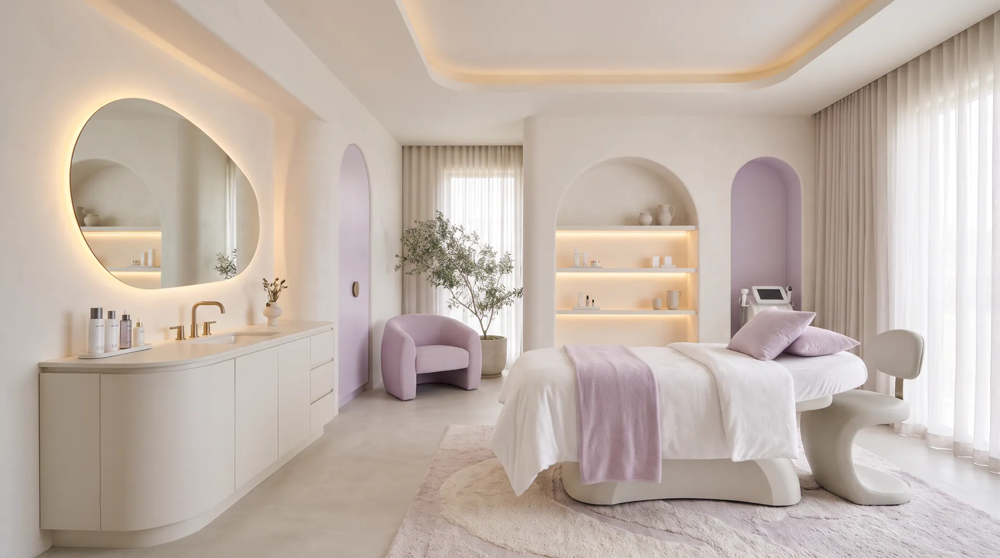

مراقبت هوشمند
پوست با خواب، فصل و استرس تغییر میکند. ما همه اینها را با هم میبینیم و درمانی را انتخاب میکنیم که با وضعیت امروز پوستت هماهنگ باشد.
همراهی ۱۰٬۰۰۰ مراجع
پوستت را با دقت بررسی میکنیم و برنامهای میچینیم که واقعاً مناسب خودش باشد.
شروع تحلیل پوست
خواب کافی آبرسانی استرس کمترپوست با خواب، فصل و استرس تغییر میکند. ما همه اینها را با هم میبینیم و درمانی را انتخاب میکنیم که با وضعیت امروز پوستت هماهنگ باشد.
نه تصمیم عجولانه، نه درمان غیرضروری. میدانی هر مرحله چه کاری میکند و چرا پیشنهادش میدهیم.
هدف ما پوستی سالم و شاداب است که هنوز شبیه خود توست، فقط کمی درخشانتر.
آوین کمک میکند پوستت را بهتر بشناسی و بهتر از همیشه از آن مراقبت کنی. مشاوره صادقانه و درمانهای علمی، برای سالمترین و شادابترین پوست تو.
خدمات

پاکسازی عمیق و رطوبترسانی برای پوست خسته.

یکدستتر شدن رنگ و بهبود بافت پوست.
معاینه دقیق و برنامه درمانی روشن.

انتخاب محصولاتی که به پوستت میآیند.
برنامه شب و روز


مراحل درمان
خواستهها و دغدغههایت را میشنویم.
پزشک پوستت را معاینه میکند و نتیجه را توضیح میدهد.
جلسات طبق برنامهای که پذیرفتهای انجام میشود.
پیشرفت را میبینیم و برنامهات را تنظیم میکنیم.
فضای کلینیک


پزشکان
متخصص پوست
لیزر و جوانسازی پوست
رزرو نوبت